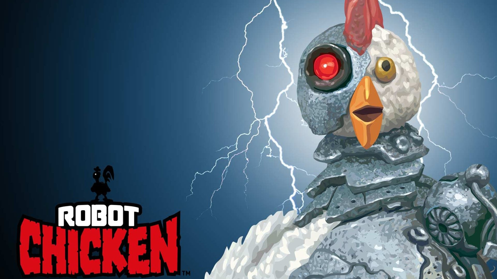

ROBOT CHICKEN: THE MOVIE
Robot Chicken is an American adult animated stop motion sketch comedy television series, created and executive produced for Adult Swim by Seth Green and Matthew Senreich along with co-head writers Douglas Goldstein and Tom Root. The writers, most prominently Green, also provide many of the voices. Senreich, Goldstein, and Root were formerly writers for the popular action figure hobbyist magazine ToyFare. Robot Chicken has won two Annie Awards and six Emmy Awards.
WHERE WILL YOU FIND IT
You will find the cinema right next to the Food Court.